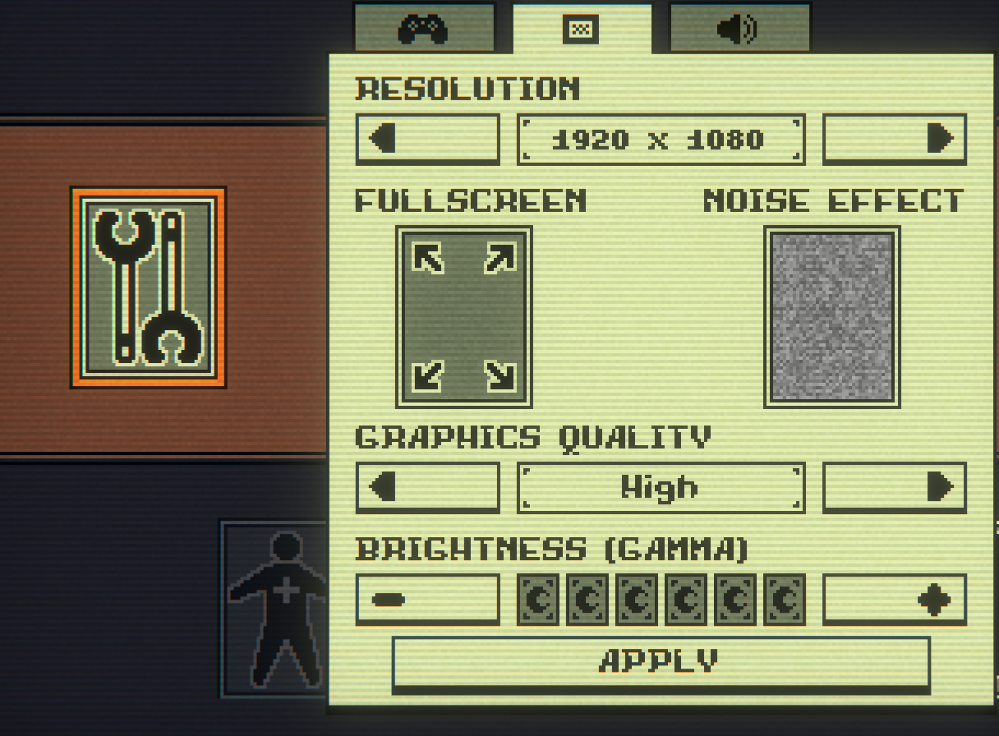

This wireframe was made before i had any prior knowledge of wireframing.
Additionally, I wasn't sure of the direction to take my website in. The
focus for this wireframe is the home page. I was focused on plainly
presenting the most important information, that being the header and
navigation to the other pages. Due to being the first wireframe, styling
was not considered. I also neglected to consider other layouts besides
desktop. Overall while this is a good starting point, more work needs to
be done to solidify the vision for this site.
Wireframe 1:
Wireframe 1: Improved version of first wireframe (Desktop and mobile layout)
These wireframes are simply cleaned up versions of the previous using a
wireframe site to improve its visual quality. As far as differences go,
I added another layout for mobile devices. I added a scroll bar on the
side for improved navigation. At this point I had an idea on the theme
for my website being styled after video games and their menus. For this
reason I added drop-down that opens the main navigation menu. Generally,
I still adhered to the idea of keeping navigation simple.
This is an early concept of what a navigation menu could look like. The
main inspiration is a video game menu, specifically an rpg menu. Without
fonts an colours it can be harder to convey but the plan is sharp
shapes, (mostly rectangles) a dark blue colour scheme and an appropriate
font. Potentially also icons that match the theme.
Inspiration 1: Final Fantasy menu
The main inspiration for this design is one of FInal Fantasy's menus.
The idea for the potential colour and font is also inspired by these
types of menus. I like the colurs and block-like construction of the
menu, although I dislike how cluttered it can look. Sometimes the
information hierarchy can be confusing aswell. For my site, I will most
likely be using similar colours and shapes, but different
Concept 2: Slightly improved navigation menu
This is a slightly improved menu for navigating.
A drop down expands to a page selection. When an option is hovered over it becomes indented and a cursor appears.
This is a little bit of visual feedback for the menu. Visual clarity is very important with the menus as it aids in user friendliness.
Additionally, when hovering over an option, some text would appear in the box to the right,
whether it be a preview of the contents or a description.
This is still styled after a video game menu. Unfortunately, some menus in older games tend to be cluttered and confusing.
The text/description section is not final. A large block of text could clash with the simple, user friendly menus.
This navigation would be present on every page with variations for other menus, such as my links etc.
The navigation section to the left is to navigate on the page. This is an example for the blogs page.
In this case each button would navigate to its corresponding position on the page.
As for composition, I'm not sure about its placement. An idea would be to place the left navigation below the page navigation
section as to not mix up the two navigation menus. Overall the goal is still user-friendly simplistic menus which evoke
sense of video games.
Inspirations:
Inspiration 2: Galv's RPG Maker
These early examples are primarily from Japanese Roleplaying Games, (JRPG) however the inspiration also extends to the modular
box-like menus in games in general (usually associated with older games. Newer games tend to have more elaborate menus)
The focus and takeaway for my website is a user-friendly experience that displays the necssecary information while also
being visually similar enough to video game menus to evoke that thought while navigating the website.
I want the website in general to convey in some sense that I am interested im game development. However the layout and colours
from these games are very distinct. In future I may try to avoid styling my UI very close to my inspirations and rather go for
a more general type of box-like menu with some visual filter to convey the feeling im going for. A more subtle aesthetic
would be preffered as it would aid in the simplicity of the website and help keep navigation simple and intuitive.
A more complicated menu would liekly be more difficult to navigate.
Inspiration 3: Stardew Valley main screen

Inspiration 4: Inscryption options menu
Examples of the box like structure but without a direct style inspiration.
Useful to study the visual hierarchy of these types of menus.
If my plan for the JRPG inspired menus doesn't work out,
I will most likely pivot to a more general style such as Inscryption. (from the figure above)
The benefits of this would be a less striking resemblence to an already existing property and more room to express myself with more
unique visuals. As far as the Inscryption menus go, I would mostly be looking at the visual style rather than layout,
such as the thick lines, font and CRT TV screen filter. (Very likely to go with this as the site progresses)
The menus I've designed previously would most likely be simplified to improve user friendliness. The box style and filter
would hopefully be enough to convey the theme while not adding to the complexity of the navigation.
For the first practice for style guides, we were split into teams to
design a style guide for a specific kind of website. The prescribed site
was a South African skincare website with a focus on natural indigenous
ingredients.
DESIGN GOAL:
Our website will showcase a minimalistic, clean aesthetic that
prioritizes a user-friendly and engaging experience, that is easily
navigatable. The website will display the products, through reflecting
the richness of South Africa's landscape.
DEFINING VISUAL AESTHETIC:
Our website will exhibit a minimalistic aesthetic, showcasing Blossom
Beauty's products, in a manner that is appeasing and easy to the eye.
The focus of the website is to emphasize the organic ingredients of the
products, which will attract our target audience. Our minimalistic
colour palate will create an emphasis on the products to encapsulate
their natural origin. These colours will be seen throughout the page, to
create consistency, which will not overwhelm the user with change of
colour aesthetic.
COLOUR SCHEME:
Test style guide colours
The website contains a neutral background which will emphasise the text
and products, as there will be a contrast between the light background
and dark text. With the use of different colours for boarders and
headings, leads the viewers eyes through the website, without
distracting them.